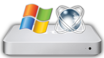

The NTATV Project: Bringing Windows NT (Windows 2000, Windows XP, Windows 2003, ReactOS) to the original Apple TV.
Contents:
Do note that I have not done extensive testing on anything except XP. Hardware that works on XP is likely to work on Windows 2000/2003, but is not guaranteed to.
| Operating System | Kernel | PCI | USB | Basic Video | Accelerated Video (HDMI) | Accelerated Video (Component) | Ethernet | WiFi | RCA audio | Optical audio | HDMI audio | Remote | Software Reboot |
| Windows pre-2000 (NT3/4, 9x, DOS-based, etc) | Will likely never work; too reliant on legacy BIOS, PIC interrupts, and non-ACPI device enumeration | ||||||||||||
| Windows 2000 | Working | Working | Working | Working | Working1 | Untested | Working | Working2 | Partially Working3 | Untested | Untested | Broken | Broken |
| Windows XP | Working | Working | Working | Working | Working1 | Working8 | Working | Working | Partially Working3 | Working | Broken | Broken | Working |
| Windows 2003 | Working | Working | Working | Working | Untested | Untested | Working | Untested | Untested | Untested | Untested | Broken | Untested |
| Windows Vista | Partially Working | Unknown4 | Unknown4 | Broken | Unknown4 | Unknown4 | Unknown4 | Unknown4 | Unknown4 | Unknown4 | Unknown4 | Broken | Unknown4 |
| Windows 7 | Does not work; no compatible bootloader or EFI-compliant video driver at this time | ||||||||||||
| Windows 8, 8.1 | Working6 | Working | Working | Working | Working7 | Untested | Working | Working | Partially Working3 | Untested | Broken | Broken | Working |
| Windows 10 | Working6 | Working | Working | Working | Working7 | Untested | Working | Working | Partially Working3 | Untested | Broken | Broken | Working |
| Windows 11, any future versions of Windows | Will never work; no 32-bit CPU support | ||||||||||||
| ReactOS | Working | Broken | Broken5 | Working | Broken5 | Broken5 | Broken5 | Broken5 | Broken5 | Broken5 | Broken5 | Broken | Broken5 |
Could not load SYSTEM.ALT hive!, try installing Windows on a FAT32 partition and converting to NTFS once the system is installed (this generally works for whatever reason)The Apple TV uses an extremely weird configuration for HDMI audio in that the Intel chipset, not the NVIDIA video card, is responsible for the audio over the HDMI port. The Intel HDMI audio drivers from the GMA 950 drivers will install, but no devices show up. In order to get this working, I'd need to either completely rewrite or binary patch the Intel HDMI audio drivers to support the Apple TV, which would likely be extremely complicated. If someone wants to work on this, let me know.
NTVDM on Windows XP requires some legacy BIOS functions (likely the Extended BIOS data area and legacy VGA functions from the GPU) and therefore will not work. Just use DOSBox or WineVDM (make sure to download the version for older Windows versions) to run DOS/early Windows applications. I haven't tested it on Windows 8/10 but it probably works fine since those OSes have official UEFI support.
NT versions prior to 2000 would require a custom HAL to make use of ACPI and the APIC timer, another custom video driver, and probably some other modifications too. Windows 9x will not work due to its reliance on BIOS functions.
Contributions are welcome! I am particularly interested in having a more functional driver for the front LED and remote (I wrote a proof-of-concept driver awhile back, but it never really worked as well as I hoped). If anyone with experience writing Windows drivers is interested in working on one, please let me know!
If you experience any issues with NTATV, please let me know through the NTATV issue tracker. Please refrain from reporting known issues like the ones below.
My custom version of FreeLoader from ReactOS is located in this repository. To compile it (MSVC is not currently supported):/usr/local/RosBE/RosBE.sh, on Windows it can be started from the Start menu)git clone https://github.com/DistroHopper39B/reactos -b AppleTV-Desktopcd to my repository./configure.sh (Linux) or configure.cmd (Windows) -DSARCH=appletv && cd output-MinGW-i386ninja freeldrfreeldr.sys will be located in output-MinGW-i386/boot/freeldr/freeldr.
For bootvid.dll, run ninja bootvid.
For genfbvmp.sys, run ninja genfbvmp.
CriticalDeviceDatabase to automatically load the framebuffer driver.pciide.sys copying no longer requiredfreeldr.sys instead of mach_kernel for consistency with other FreeLoader portswin2000 ISO for Windows 2000 installs.
Fix to early video driver preventing corrupted boot logo at certain resolutions
Initial release
NTATV_UTILS/DiskAndVideoFix.reg: currentq's testingNTATV_UTILS/Boot/boot.efi: Apple TV stock bootloader, from Apple TV stock OSNTATV_UTILS/Boot/freeldr.sys: FreeLoader from ReactOS; Apple TV modifications by me, UEFI modifications by Justin Miller (The_DarkFire_) and Hermès Bélusca-MaïtoNTATV_UTILS/Boot/System/Library/Extensions/Dummy.kext: DummyKext by meNTATV_UTILS/Video/bootvid.dll: Bootvid from ReactOS; UEFI modifications by Justin Miller (The_DarkFire_) and Hermès Bélusca-Maïto; slightly modified by meNTATV_UTILS/Video/genfbvmp.sys: Generic framebuffer driver for ReactOS (not in upstream yet); written by Justin Miller (The_DarkFire_) and Hermès Bélusca-Maïto; Windows modifications by me